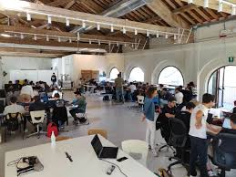

Cos'è
Polarity è un'azienda italiana con sede a Reggio Emilia che offre servizi di sviluppo software avanzato per startup e aziende tecnologiche. Il suo obiettivo principale è accelerare il successo dei clienti fornendo team di ingegneri software di alto livello. Le aree di competenza includono: Infrastrutture AWS, sviluppo web e mobile, Intelligenza Artificiale e Machine Learning, sistemi distribuiti.
Lezione 1
Polarity ha presentato le proprie attività e illustrato il funzionamento di un'applicazione mobile e desktop, evidenziando le principali differenze nei linguaggi di programmazione (Java o JavaScript per le app desktop, JavaScript per le app mobile). È stato poi spiegato come avviene il caricamento di una pagina web e i codici di risposta del server: 2xx successo, 3xx reindirizzamento, 4xx errore client, 5xx errore server.
Lezione 2
Ho imparato a effettuare una chiamata di rete utilizzando il protocollo HTTP tramite JavaScript, comprendendone sia il funzionamento che la sintassi. Sono state spiegate le differenze tra i formati CSV, WMC e JSON. Ho poi scoperto cosa sono le API e come funzionano, esercitandomi nel richiamare un'API gratuita tramite JavaScript.
Lezioni 3 e 4
Ci è stato chiesto di lavorare in gruppo a un piccolo progetto: realizzare un bot Telegram collegato a un'API. Il mio gruppo aveva inizialmente un'idea piuttosto ambiziosa, che abbiamo dovuto ridimensionare per rispettare i tempi.

Nell'ultimo incontro abbiamo presentato il nostro bot: tramite un comando era possibile creare automaticamente una playlist sul proprio account Spotify e aggiungere brani scrivendo in chat il titolo o una frase contenuta nella canzone. Il bot salvava poi la playlist direttamente sull'account dell'utente.
Commento
Competenze attivate
Trasversali
- Competenza personale, sociale, e capacità di imparare ad imparare
- Competenza alfabetica funzionale
- Competenza imprenditoriale
- Competenza matematica e in scienze, tecnologia e ingegneria
- Competenza digitale
Specifiche
- Determinazione dei requisiti per i processi collegati ai prodotti/servizi offerti
- Analisi decisioni strategiche sull'evoluzione tecnologica delle soluzioni ICT
Ho trovato questo progetto piuttosto interessante e stimolante. Mi ha incuriosito a tal punto che, una volta terminato, ho deciso di realizzare un bot tutto mio per uso personale: lo utilizzo per verificare su quale piattaforma di streaming sia disponibile un film.
L'unico aspetto che mi sento di criticare è l'intensità del corso. Gli incontri erano piuttosto lunghi e, soprattutto verso la fine, diventava difficile mantenere la concentrazione. A mio parere, sarebbe stato utile avere una base più solida di JavaScript già acquisita a scuola.